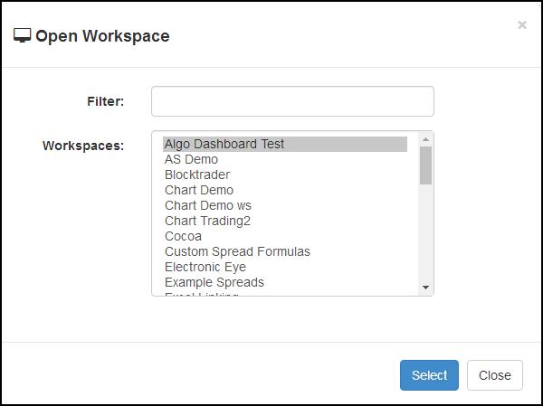
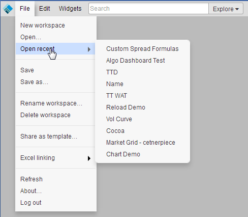
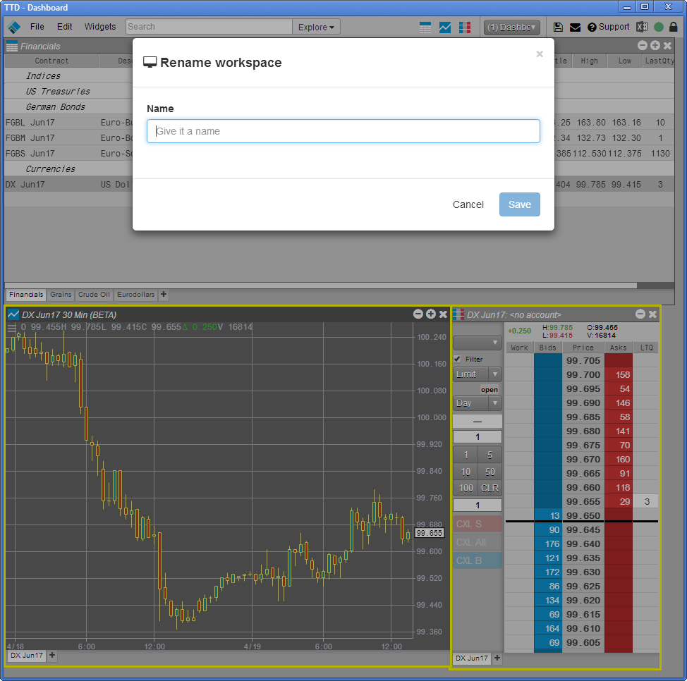
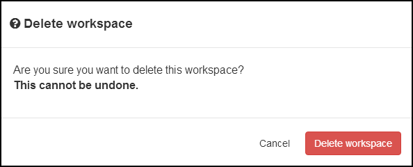

Creating a new workspace
When you create a workspace, you can start with a blank one or modify an existing workspace and save it as a new one.
To create a workspace using a blank template:
-
From the main workspace window's File menu, select New workspace.
The existing workspace is closed and a new, blank workspace main window is opened.

-
Add and arrange widgets and windows as desired.
-
From the main workspace window's File menu, select Save or Save as.
The current workspace closes and is replaced by a new workspace.
Opening a workspace
To open a workspace:
-
From any workspace window, click the Save icon in the titlebar.
-
From the main workspace window's File menu, select Open.

-
Select the desired workspace and click Select.
The current workspace closes and the selected workspace opens.
You can also open a recently-used workspace by selecting Open recent from the File menu in the main workspace window.

Saving a workspace
To save the current workspace, do one of the following:
-
From the main workspace window's File menu, select Save.
-
From the main workspace window's File menu, select Save as and specify a name for the workspace.
Renaming a workspace
To rename a workspace:
-
From the main workspace window's File menu, select Rename workspace.

-
In the Name field, enter the desired workspace name and click Save.
Deleting a workspace
To delete the current workspace:
-
From the main workspace window's File menu, select Delete workspace.

-
In the confirmation dialog, click Delete workspace.
The deleted workspace is replaced by a new workspace main window.